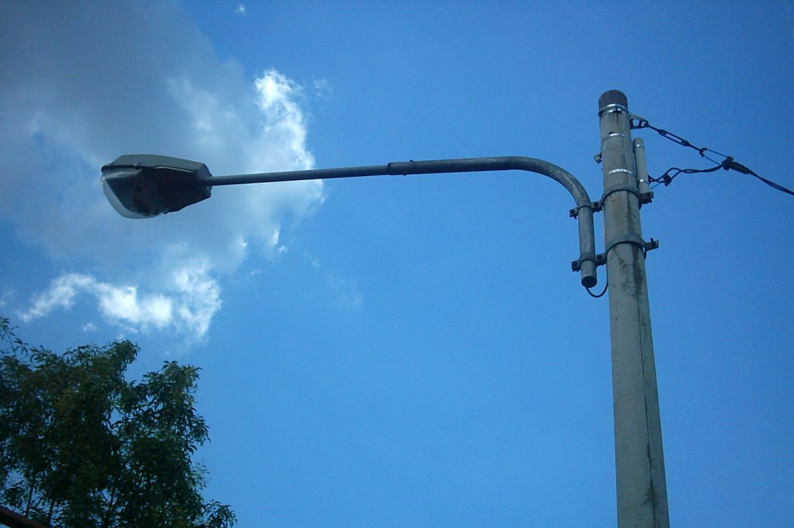

Laporan Terbaru

Jalan Rusak
Lubang besar di Jalan Merdeka
Terdapat lubang besar yang membahayakan pengendara motor...
In
Progress
Lihat Detail

Lampu Jalan
Lampu mati di taman kota
Beberapa lampu taman tidak menyala sejak minggu lalu...
Resolved
Lihat Detail